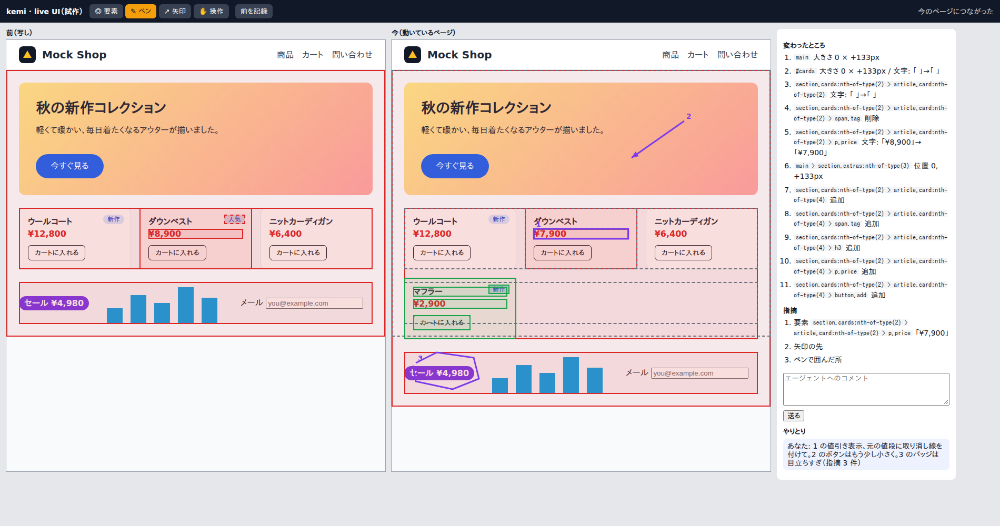

動いているページの見方（--live）の置き方
採用: 案 A（ページのツリー版、2026-10-06）。比べる相手の選択には、モックの割り当てと重ねて透かす表示が入る（docs/spec/live-compare.md）。表示幅の候補は 390・768・1280。モックと仕様が食い違うときは仕様が正しい。
仕様（docs/spec/live.md）が「試作で決める」としている、画面の置き方と道具の出し方を決めるモック。決めるのは次の 4 つだけ。中身の約束（同じ幅で並べる、変化に印を付ける、場所は要素・矢印・ペン、など）は仕様のとおり。会話パネルは採用済みの案 A2 をそのまま右に置く。
何を決めるか 設計変更
- 1. 変化の一覧
- R-PAGE-DIFF の「変化の一覧」（主な変化とずれただけ）をどこに置くか。
- 2. 道具
- 要素・矢印・ペン、表示幅、比べる相手（スナップショット）、「今を記録」の操作をどこに並べるか。
- 3. 書く場所
- 場所を 1 つ以上集めて本文を書くコメントを、どこで書くか（コードの見方は差分の中の入力欄）。
- 4. ページとコード
- 「ページ」と「コード」の 2 つの見方の切り替えをどこに置くか。
試作で動かした形（Node の中継とモックのサイト。道具は上の帯、変化の一覧と書く欄は右）

案を比べる
同じ内容（値下げで価格の色と文字が変わり、商品が 1 つ増え、下の要素がずれた。要素・矢印・ペンの場所を持つコメントを書いている途中）で比べる。
会話パネルを
- 形: 左の列は「ページのツリー」。記録やコメントがあるページ（URL）を並べ、それぞれに表示幅・変化の数・コメントの数を出す。表示中のページを開くと、その下に変化の一覧（主な変化が上、ずれただけは畳む）。ページを押すと動いているページをその URL に移す。コードの見方に切り替えると、今どおりファイルのツリーになる。
- 対象が複数のとき: 1 つのレビューで見るページは、1 つのオリジン（--live の URL）の中の複数の URL × 表示幅。コードの見方のグループとファイルに当たるのが、ページと変化。
- 道具: ページの上の 1 本の帯にまとめる。左から見方（ページ / コード）、表示幅、比べる相手、今を記録、道具（要素・矢印・ペン・操作）。道具はページの上には浮かせない（RL4 と同じ理由。判断したい周りを隠す）。
- 書く場所: 会話パネルの書く欄。道具で場所を足すと、書く欄の上に番号つきの場所が並び、そこで外せる。保存すると会話パネルのスレッドになる。
- 良いところ: コードの見方と同じ並び（左に一覧、中央に本体、右に会話）で迷わない。ページ 2 枚の幅が一番広く取れる案の 1 つ。
- 気になるところ: 3 列だと 1280px でページ 1 枚が約 300px。表示幅 1280 のページは約 0.25 倍に縮む。一覧と会話パネルは畳める。
- 形: 左の列を無くし、会話パネルに「会話」「変化」のタブを足す。ページ 2 枚は一番広い。
- 気になるところ: 変化を見ながら会話を書くときに、タブを行き来する。変化の項目を押してコメントの場所に足す、という流れが 1 画面で見えない。
- 形: 変化の一覧をページの下の引き出しに置く。横に長い 2 列で並べる。
- 気になるところ: 縦の高さをページと取り合う。ページは縦に長いことが多く、一番見たいところが下に押される。
コメントを書く流れ（案 A）
- 道具を選ぶと、動いているページの上で要素を選ぶ・矢印を引く・ペンで囲むができる（「操作」に戻すとページを普通に触れる）。
- 場所を足すたびに番号（1, 2, 3 …）がページの上と書く欄の上に出る。× で外しても番号は振り直さない（仕様 R-PAGE-COMMENT）。
- 変化の一覧の項目にも「場所に足す」を置き、変化した要素をそのまま要素の場所にできる。
- 保存すると、ページの上の番号は控えめな印になり、会話パネルのスレッドの札になる（コードの見方の札と同じ）。別の表示幅で付けたものは札に幅を出し、押すとその幅に切り替える。
狭い画面
仕様（R-PAGE-VIEW）どおり、ページは 1 枚ずつ切り替えて見る。変化の一覧はツリーと同じ引き出しに、会話パネルはシートにしまう。道具の帯は 2 段目に横スクロールで並べる。どの案でもここは同じ。
決めたあと
- 採った案を
docs/design/ に置き、live.md の「まだ無い」を埋めてリンクする。
- 表示幅の既定の候補（仕様が「試作で決める」）をここで決める: 390・768・1280 を提案。
- --live は大きいので、計画を分ける: ①中継と見方とスナップショット ②差分と変化の一覧 ③ページへのコメント ④保留と復元。案（R-PAGE-VARIANT）はその後の (c)。